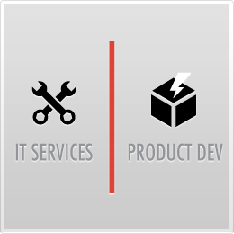
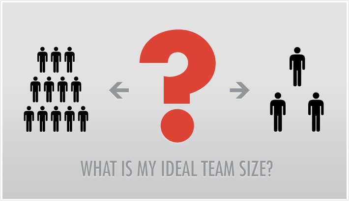

- Details
- Published: 20 May 2014
1. Services Specialization
Software development outsourcing is divided into two types of firms:
- Firms providing IT services
- Firms specializing in product development
Both firms function differently in terms of the duration the team collaborates for, the specification process, and the services provided.
IT service firms:
- Collaborate for a limited time
- Rely on heavy, detailed specification, because many projects are developed under fixed bids
IT service engagements typically move through a careful bid process where the end product is sufficiently specified that multiple parties can provide detailed responses on cost and time. Often times these projects are large requiring many resources that need to be put in place for a defined period such as 6 months but then the project team is expected to disband. As a result low attrition and ongoing collaborative engagement as requirements change that are so important with product firms is relatively not important in IT engagements.
Product development firms:
- Collaborate for a very long time, possibly years
- Rely on minimum specification to develop creative solutions
Product development (especially for early stage customers) is quite different from the IT development process. Here often the product requirements are not well understood beyond a high level specification. Many companies have moved to a Minimum Viable Product (MVP) model where the objective is to get a product completed quickly so that it can be the basis of direct customer feedback as to final requirements. Since there is typically generations of product developed as the product and market mature there is a need to have development teams that stay together over long periods since they will have developed significant know-how in the development process.
2. Technical Specialization
When outsourcing companies, hire firms that have software development experience with your chosen technology or platform. For example, if the project is to utilize embedded Linux, choose a firm that has the desired senior level guidance, critical mass of expertise to draw from and enough recruits for expansion of the team when necessary.
Services required to successfully turn a raw idea into a product include selection and development of:
- User experience design
- Software architecture
- Development
- Testing
- Maintenance
3. Size of Outsource Firms
Typically, to develop a new product, a team of 3 to 10 developers is sufficient. Some software development firms can be quite large and will not look at engagements that have small teams. On the other hand too small a software development firm can mean that they do not have the breadth of technology or services required for a delivered product. They can also lack the engineering process and infrastructure required to deliver a product on time and on budget.

Avoid choosing a software development firm that is too large or too small. Problems arising from choosing:
Too small a company size:
- Lack of company infrastructure
- Lack of engineering processes or management to implement anything non-trivial
- Lack of full range of services such as QA, maintenance, support, etc;
- Problems recruiting top talent outside the immediate circle of friends
Too large a company size:
- May not manage smaller engagements with priority
- Shuffling of qualified resources as needed to larger, higher priority clients
4. Geography
Some countries and regions are better suited for outsourcing software product development. Points to consider when choosing a location for development include:
- Technology expertise or specialization based on local universities or technology employers
- Attrition
- Cost of labor
- Cultural issues which potentially demand a level of specification than is typical of product companies
- IP protection
For example products requiring web development and PHP are great targets for development in Latin America. On the other hand, Eastern Europe is a better hub for embedded and Linux development.
Use the "follow the sun" model. When implementing QA, as well as development, take advantage of firms that have development centers separate from their QA centers. Not doing so pushes the product timeline, a current problem for firms operating in central Europe. The advantage of say developing in Europe and performing QA in Latin America is increased productivity of 15 hours in a 24-hour period.
What about choosing a US headquartered firm? Doing so has enormous advantages:
- They will pick a location based on increasing product development, not family or nationalistic ties
- They will span geographies to implement the "follow the sun" model
- There is the protection of working with a US corporate entity under US law
5. IP Protection
Having high engineering talent is useless if the country of location does not offer the protection needed for a product company. In contrast, outsourcing companies in Japan, the European Union and most of Latin America are safe bets. These countries/regions have homologized IP laws consistent with the US approach.
6. Added Value
For any successful business, customers should expect to be an active partner and not just another customer. How do you provide this complete customer experience to help your company thrive?
Focus on US-based software product development companies that are oftentimes led by software technology executives. These companies provide significant added value by establishing business connections with:
- Venture capitalists
- Bankers
- Private equity firms
- Other technology companies
How do you bring more to a company when price is not a major issue? Consider this:
- Concentrate first on outsourcing to the company that fits your company best in terms of services, technical expertise and attrition
- Keep in mind that outsourcing development does not need to be a decision that you can’t later change. As companies grow and mature it makes sense to implement different hybrid models for development which would include in-house and outsourced options.
- After selecting a final candidate list based on technology, services and other fit then make your decision based on price and relationship
If price is of major concern, look to outsourcing companies willing to work on a partial equity basis. As an additional benefit to a partial equity model is that both companies interest will be aligned to the objective of minimizing costs.